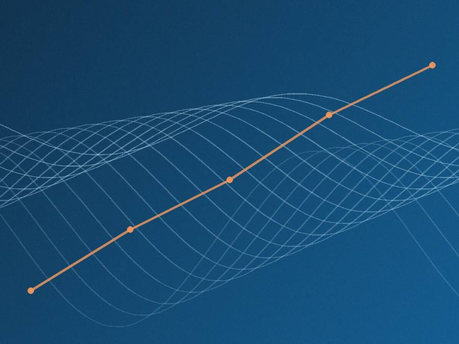

Four disciplines.
One team.
Most projects use more than one. You deal with one partner, not four.
Websites and apps people find easy to use.
A visitor decides in seconds whether your product is worth their attention. We design around how people actually behave — where they look first, what earns trust, where they drop off — then build it to stay fast and easy for your team to run.
What’s included
Talk to us if
Your site doesn’t reflect where the business is today, or you need a tool built properly rather than patched together.
Digital marketing that brings the right people to you.
Social, search and paid media planned together, so every channel supports the others and every rupee is accounted for.

What’s included
Talk to us if
You’re spending on ads without a clear read on what works. Your brand doesn’t say what makes you different yet.
Video and design people actually stop to watch.
Video, motion and design produced in-house — made to hold up in front of a real audience, not just in a pitch deck.
What’s included
Talk to us if
You need an identity that matches your ambition, or a product worth showing off properly.
AI that gives your team its week back.
We find the work that shouldn’t take a human’s time, automate it properly, and train your team to run it.
What’s included
Talk to us if
Manual work is eating hours your team could spend elsewhere, and you want a responsible place to start.
Not sure which discipline you need?
Most of the work we do draws on more than one. Tell us the problem and we’ll help you shape the approach — free of charge.
Let’s talk. →